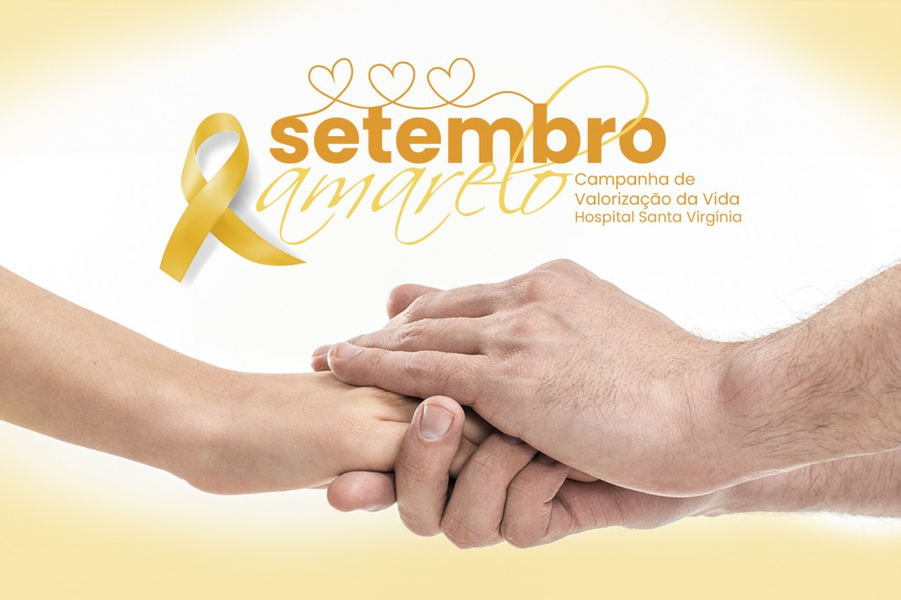

Setembro Amarelo: Iluminando Caminhos para a Vida e a Esperança
Setembro Amarelo é um mês dedicado à conscientização e prevenção do suicídio. Instituído no Brasil em 2015, a campanha visa promover o diálogo aberto sobre a saúde mental e oferecer suporte às pessoas que estão enfrentando crises emocionais.
A cor amarela, escolhida para simbolizar a campanha, representa a luz e a esperança, lembrando que há sempre uma possibilidade de superar as dificuldades. Durante todo o mês, diversas ações são realizadas, como palestras, eventos educativos e campanhas nas redes sociais, para esclarecer a população sobre sinais de alerta e a importância de buscar ajuda.
Um dos objetivos principais do Setembro Amarelo é desmistificar o suicídio e reduzir o estigma que ainda cerca a saúde mental. Muitas vezes, aqueles que estão lutando com pensamentos suicidas se sentem isolados e sem apoio, o que pode agravar sua condição. Ao incentivar uma conversa franca e empática, a campanha busca criar um ambiente mais acolhedor e solidário.
O Setembro Amarelo também promove a importância de reconhecer sinais de sofrimento e oferecer suporte adequado. Pequenos gestos de empatia, como ouvir com atenção, expressar apoio e encorajar a busca por ajuda profissional, podem fazer uma grande diferença para alguém em crise.
Em muitos casos, o simples fato de saber que não está sozinho e que há pessoas dispostas a ouvir pode ser um alívio significativo. A campanha também destaca a relevância de estratégias de prevenção, como o fortalecimento da rede de apoio familiar e social, e a importância de cuidar da saúde mental de forma contínua.
Em resumo, o Setembro Amarelo é um lembrete de que a vida é preciosa e que cada pessoa tem a capacidade de fazer a diferença. Ao promover o diálogo e a compreensão, a campanha ajuda a construir uma sociedade mais empática e preparada para enfrentar os desafios da saúde mental. Se você ou alguém que você conhece está passando por um momento difícil, lembre-se de que há ajuda disponível e que procurar apoio é um passo corajoso e fundamental.